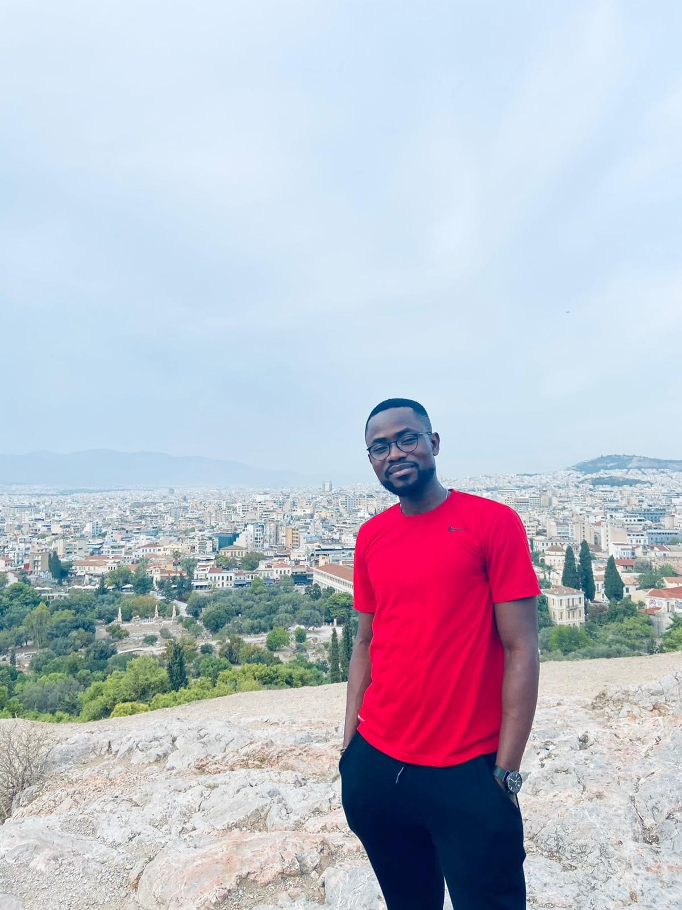

About Me
My name is Olugbenga Samuel Oyeniran and my nickname is O.G. I live in Ottawa, but originally from Nigeria in West Africa. I currently work with Amazon and my job description ensures I put a smile on people’s face by making sure customers gets their orders and gifts in time and a perfect condition.
My hobbies are listed below
- Playing Soccer
- Traveling
- Playing Video Games
My goal for enrolling in this program is to make a career switch to become a web designer because I have been fascinated with web designs, photography & art for a very long time. I am passionate about creating solutions and making people feel satisfaction whether it be from online shopping or creating a great online shopping experience.
In addition to this, I have lovely wife who has been the secret to my happiness. Having a reliable spouse
has made me cherish and value our love. I always look forward to spending a lifetime together.
as described by Stephen Kendrick the only way love can last a lifetime, is
if it’s unconditional
. I’m indeed grateful for the unconditional love I have received.